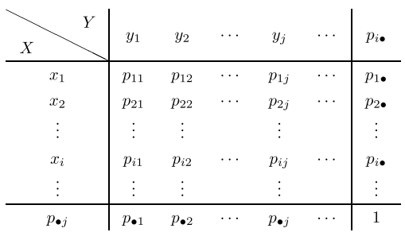
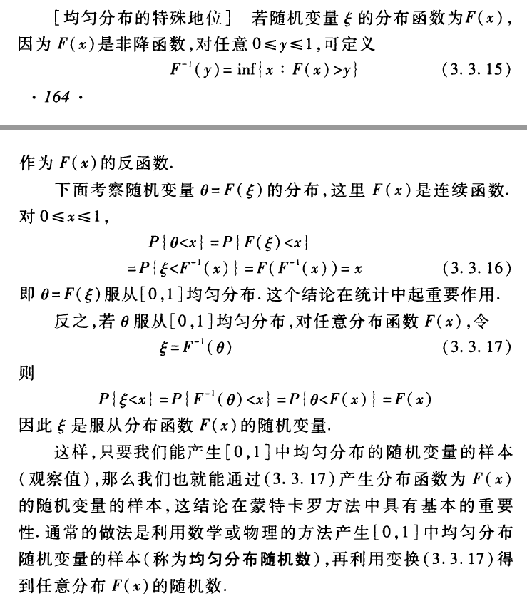

Ch.3 二维随机变量及其分布
二维随机变量
二维随机变量的联合分布函数/分布函数：设 \((X,Y)\) 为二维随机变量，对任意实数 \((x,y)\)，二元函数
称为二维随机变量 (X,Y) 的联合分布函数，简称分布函数.
性质：
(1) \(F(x,y)\) 分别是 \(x\) 和 \(y\) 的单调不减函数，即 \(x_2>x_1\rightarrow F(x_2,y)\ge F(x_1,y)\land y_2>y_1\rightarrow F(x,y_2)\ge F(x_1,y)\) 为真.
(2) 必有 \(0\le F(x,y)\le 1\)，且 \(F(-\infty, y)=F(x,-\infty)=F(-\infty, -\infty)=0, F(+\infty, +\infty) =1\).
(3) \(F(x,y)\) 关于 \(x,y\) 右连续，即 \(F(x+0,y)=F(x,y+0)=F(x,y)\).
(4) 对任意实数 \(x_2>x_1, y_2>y_1\)，有 \(1\ge F(x_2,y_2)-F(x_2, y_1)-F(x_1,y_2)+F(x_1,y_1)\ge 0\).
当 \(F\) 为分布函数时，上述四条成立；反之若某函数满足上述四条，则必然存在随机变量使之成为其分布函数.
边缘分布与边缘分布函数
定义：对于二维随机变量 \((X,Y)\)，单个随机变量 \(X\) 或 \(Y\) 的分布称为边缘分布,
已知二维随机变量 \((X,Y)\) 的联合分布函数 \(F(x,y)\)，可以轻易得到其边缘分布函数：
推广：\(n\) 维随机变量的边缘分布函数：
已知 \(n\) 维随机变量 \((X_1,X_2,\cdots,X_n)\) 的联合分布函数 \(F(x_1,x_2,\cdots,x_n)\)，可以轻易得到其 \(k\) 维边缘分布函数：
独立性条件：设随机变量 \(X,Y\) 满足，对任意 \(x,y\)，随机事件 \(X\le x\) 与 \(Y\le y\) 独立，即
即
则称随机变量 \(X, Y\) 相互独立.
性质：
若随机变量 \(X,Y\) 相互独立，\(f(x), g(y)\) 为 \(X,Y\) 的连续或分段连续函数，则随机变量的函数 \(f(X)\) 与 \(g(Y)\) 相互独立.
二维离散型随机变量
定义：若二维随机变量 \((X,Y)\) 的可能取值时有限多个或可列无限多个，则称 \((X,Y)\) 为离散型随机变量.
联合分布律：设二维离散型随机变量 \((X,Y)\) 的所有可能取值为 \((x_i,y_j),i,j=1,2,\cdots\) 则：
或其二维表格形式，称为 \((X,Y)\) 的联合分布律.
性质：
(1) \(p_{i,j}\ge 0\).
(2) \(\sum_{i=1}^{\infty}\sum_{j=1}^{\infty}p_{i,j}=1\).
边缘分布：
或其表格形式，称为 \(X\) 的（边缘）分布律.
同理有：\(p_{\bullet, j}=\sum_{i=1}^{\infty} p_{i,j}\).
联合分布律和边缘分布率在同一表中的形式如下：

联合分布函数：
边缘分布函数：
区域取值：
独立性条件：
常用二维离散型随机变量分布
三项分布：\((X,Y)\sim T(n,p_1,p_2)\)
其中：\(0<p_1,p_2,p_1+p_2<1\).
分布律：
边缘分布：是二项分布，即 \(X\sim B(n,p_1), Y\sim B(n,p_2)\).
三项分布是二项分布的推广，是多项分布的一种.
二维超几何分布
分布律：
其中 \(N=N_1+N_2+N_3,n=n_1+n_2+n_3\).
二维连续型随机变量
定义：对于二维随机变量 \((X,Y)\) 的分布函数 \(F(x,y)\)，若存在非负函数 \(p(x,y)\)，使得对于任意的 \((x,y)\)，有：
则称 \((X,Y)\) 是二维连续型随机变量，称 \(p(x,y)\) 是 \((X,Y)\) 的联合概率密度函数，简称概率密度.
性质：
(1) \(p(x,y)\ge 0\).
(2) \(\int_{-\infty}^{+\infty}\int_{-\infty}^{+\infty} p(u,v)\mathrm{d}u\mathrm{d}v=F(+\infty,+\infty)=1\).
(3) 设 \(D\) 是平面区域，则随机点 \((X,Y)\) 落入 \(D\) 内的概率为：
(4) 若 \(p(x,y)\) 在点 \((x,y)\) 处连续，则：
边缘分布函数与边缘密度函数：
边缘分布函数：
边缘密度函数：
独立性条件：
用边缘分布函数描述：
或者用边缘密度函数描述：
上述结果可以推广至 \(n\) 维随机变量：
概率密度：
\(k\) 维边缘分布函数：
独立性条件：\((X_1,X_2,\cdots, X_n)\) 相互独立，当
常用二维连续性随机变量分布
二维均匀分布
设 \(D\) 为平面有界区域，其面积为 \(S_D\)，若二维连续型随机变量 (X,Y) 的联合密度为：
则称 \((X,Y)\) 服从区域 \(D\) 上的二维均匀分布.
性质：对于 \(D_k\subseteq D\)：
二维正态分布：\((X,Y)\sim N(\mu_1,\mu_2,\sigma_1^2,\sigma_2^2,\rho)\)
若二维随机变量 \((X,Y)\) 的联合密度为：
其中 \(\mu_1,\mu_2\) 均为常数，\(\sigma_1,\sigma_2>0,|\rho|<1\) 均为常数，则称 \((X,Y)\) 符合二维正态分布.
性质：
(1) 边缘分布：\(X\sim N(\mu_1,\sigma_1^2), Y\sim N(\mu_2,\sigma_2^2)\).
(2) 独立的充要条件：\(\rho=0\).
条件分布
设 X 的分布函数为 \(F(x)=\text{Pr}(X\le x)\)，则随机事件 \(A =\{X\in S\}\) 发生条件下的条件分布函数：
离散型随机变量的条件分布
设 \((X,Y)\) 为二维离散型随机变量，其概率分布律为 \(\text{Pr}(X=x_i,Y=y_j)=p_{i,j},i,j=1,2,\cdots\)，称
为 \(Y=y_j\) 条件下，随机变量 \(X\) 的条件分布律，表格形式如下：
X|_{Y=y_j} | x_1 | \cdots | x_i | \cdots
--------------+-----------------------+----------+-----------------------+----------
P | p_{1,j}/p_{\bullet,j} | \cdots | p_{i,j}/p_{\bullet,j} | \cdots
同理，
为 \(X=x_i\) 条件下，随机变量 \(Y\) 的条件分布律.
显然，当 \(X,Y\) 独立时，条件分布成为无条件分布.
连续型随机变量的条件分布
对于二维连续型变量 \((X,Y)\)，若下述极限存在，则称为 \(Y=y\) 条件下 \(X\) 的条件分布函数，记为 \(F_{X|Y=y}(x)\).
对定义展开得到：
求导得到条件密度函数：
同理有 \(X=x\) 条件下 \(Y\) 的条件分布函数与条件密度函数：
显然，当 \(X,Y\) 独立时，条件分布成为无条件分布.
二维随机变量函数的分布
离散型随机变量函数的分布：
设二维离散型随机变量 (X,Y) 的分布律为 \(\mathrm{Pr}(X=x_i,Y=y_j)=p_{i,j},i,j=1,2,\cdots\)，若 (X,Y) 的函数 \(Z = g(X,Y)\)，因其取值集合必然可数，故设其可能取值为 \(z_k, k=1,2,\cdots\)，其概率分布为：
连续型随机变量函数的分布
连续型随机变量 \((X,Y)\) 的函数 \(Z=g(X,Y)\) 可能是离散型，也可能是连续型.
对于前者，可以枚举其取值得到 \(Z\) 的分布律.
对于后者，通常利用分布函数法来求解，即
求出其分布函数后求导得到概率密度 \(p_Z(z)\).
以下为集中常用函数的分布公式
和与差的分布
通过分布函数法和一些还原操作可以得到，对于 \(Z=X+Y\)：
特别地，当 \(X\) 和 \(Y\) 独立时，式子转化为 \(p_X\) 和 \(p_Y\) 的卷积，故而下述公式亦称为卷积公式：
类似地，对于 \(Z=X-Y\)，有：
积与商的分布
对于 \(Z=XY\)：
对于 \(Z=X/Y\)：
\(\max\) 与 \(\min\) 的分布
设随机变量 \(X\) 和 \(Y\) 相互独立，且 \(M=\max(X,Y),N=\min(X,Y)\)，则：
上述结论可以推广到 \(n\) 个相互独立的随机变量：\(M=\max(X_1,X_2,\cdots,X_n),N=\min(X_1,X_2,\cdots,X_n)\)：
分布函数的分布
若随机变量 \(\xi\) 的分布函数为 \(F(x)=\mathrm{Pr}(\xi<x)\)，因 \(F(x)\) 非降，故可定义其反函数：
对于随机变量 \(\theta=F(\xi)\) 的分布，我们有：
故而 \(\theta\sim U[0,1]\).
注意：这个结论反过来有更重要的应用意义：若 \(\theta\sim U[0,1]\)，对任意分布函数 \(F(x)\)，令 \(\xi = F^{-1}(\theta)\)，即可使得 \(\xi\) 成为服从分布函数 \(F(x)\) 的随机变量. 这样我们只要能生成 \(\theta\)，就能利用该变换生成 \(\xi\)，这是一种极其常见的采样方法.
